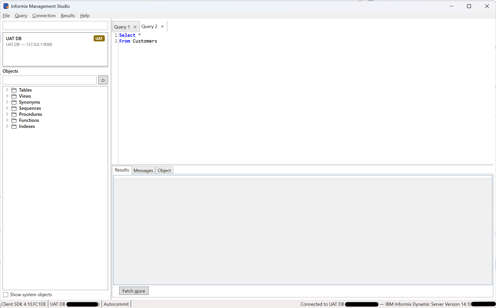
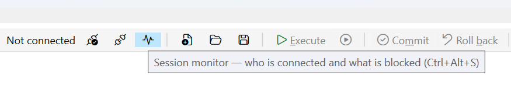

A management studio for Informix.
Connect to a server, browse its objects, and write and run SQL — in one window, on Windows. IMS performs no administrative change of its own.
Informix has no equivalent today.
SQL goes through dbaccess, object definitions through dbschema,
diagnostics through the onstat family. Generic JDBC clients treat Informix as a
lowest-common-denominator target.
Every statement IMS sends is one you typed or explicitly requested; it issues nothing on its own initiative. What you may do is decided by your Informix privileges, not by IMS — it grants no capability you do not already hold, and there is no shared or service account behind it. It offers no way to kill a session: if one needs terminating, that is an administrative action for whoever owns the server.
It emits no telemetry of any kind, enforced by a test that fails the build if a telemetry package enters the dependency graph. Those constraints are what make it reasonable to point IMS at a production server, and to hand it to a colleague.


Four capabilities, in the order you meet them.
-
Connect.
A connection is described by its own settings rather than by the machine's
sqlhosts, so one that works on your workstation works the same on a colleague's. Each is labelled Development, UAT or Production, shown beside it at all times, so a production connection cannot be mistaken for another.Passwords go to Windows Credential Manager — never a config file, never a log.
Built · in use against a live instance -
Browse.
Tables, views, synonyms, sequences, procedures, functions and indexes, grouped by owner. Nodes load their children on demand rather than reading the whole catalogue at connect time, so opening a large schema does not stall. Opening an object gives it a tab of its own, beside the query tabs, showing its definition; for a view, that is the source Informix itself holds.
Built · user-defined types not yet listed -
Query.
Informix SQL and SPL highlighting. Each tab holds one script with its own connection and its own results, so a long query in one tab does not block work in another. Select text and run to execute only the selection.
A toolbar above the editor carries the same actions, so none of them depends on knowing its key. It names the instance the current tab runs against, greys out everything that needs a connection until there is one, and turns Execute into Cancel while a statement is running.
Rows are fetched in blocks rather than all at once, so a large result starts displaying immediately. When a grid shows only part of a result it says so — a truncated grid is never presented as a complete one.
Built · F5 runs · cancel is limited, see below -
Monitor.
A read-only view drawn from
sysmaster, one tab per instance. It lists who is connected — session id, user, originating host, application, state, connection time — sorts and filters on any column at once, and marks your own sessions with the wordYOUrather than a colour. Beside it, instance indicators: mode, uptime, session count, read and write cache efficiency, checkpoint recency. Each figure is read by its own query, so one absent object costs one figure and readsUnknownrather than blank.Refresh is manual by default; an optional interval is floored at five seconds, and nothing is queried while the tab is closed or sitting behind another tab. Every query is on show with the
onstatcommand that answers the same question beside it — including the ones that failed, with the server's reason, and the ones IMS decided not to send. Take the block to an editor tab with one button and run it yourself.Strictly read-only: IMS does not offer to kill a session. Blocked-session identification is built but returns
Built in v0.3.0 · Ctrl+Alt+S · blocking answer limited, see belowUnknownon a busy instance — see below.
Three gaps to know before you rely on it
- Cancelling stops the waiting, not the statement.
-
Measured against 14.10, the ODBC driver's cancel does not reach the server: the statement
runs to completion or to its timeout regardless. IMS stops waiting and returns the
window to you, and the session stays usable — but the server keeps working. A cancel frees
you, not the server, so bound an expensive query before you send it, with
FIRSTor a restrictiveWHERE, rather than relying on cancelling it afterwards. - The monitor cannot tell you who is blocking whom on a busy instance.
-
Measured against 14.10 as an ordinary developer account: every read of
sysmaster:syslocksexceeds a ten-second cap — a self-join and a plain single scan alike.syslocksis synthesised from shared memory across every lock in the server, so on a busy one it costs more than the whole budget whatever the query asks for. The resolver, the grading and the chain logic are built and unit-tested, and the UI says the source timed out rather than claiming the server does not expose it — but the answer you opened it for readsUnknown. Useonstat -g lok. Raising the cap is not the fix: since cancel does not reach the server, a longer cap means a longer unstoppable statement holding a connection. Two more per-session figures are absent for the same kind of reason — the current statement needsSELECTonsyssqlcurses, which an ordinary account does not have, and temporary space is not derivable from what IMS reads. - User-defined types are missing from the object tree.
- Descoped rather than diagnosed. Everything else lists correctly.
Unsupported, provided as-is, and not a replacement for the Informix CLI. IMPLEMENTATION-TODO.md records exactly what is and isn't built, item by item, and the changelog carries the standing limits of every build so far.
What it needs.
IBM INFORMIX ODBC DRIVER (64-bit) registered;
developed against CSDK 4.10.FC1DE.
How to install it
· Fix Central (search
Informix Client Software Development Kit; an IBMid and an entitled account are
required). If your organisation already runs Informix it often arrives with the server
tooling — your DBA can point you at the licensed copy, usually quicker than Fix Central.
INFORMIXDIR, and the ODBC driver name. An empty INFORMIXDIR means
the SDK is not installed for this account; (none registered) means the SDK is
there but its 64-bit driver is not — IMS is a 64-bit process and cannot load a 32-bit
driver. Error -354 means the connection names no database, which the driver
permits and the server refuses. The manual covers the rest.
Build it yourself.
Warnings are errors across every project, so a clean build is also the code-quality gate. No test connects to an Informix instance.
PowerShell
dotnet restore ims.sln
dotnet build ims.sln --configuration Release
dotnet test ims.sln --configuration Release
dotnet run --project src/Ims.AppThe PRD carries the scope, the decisions and their rationale, and the requirement IDs that code comments cite. Pilot testers should read PILOT-INSTALL.md, which is written for them rather than for a developer.